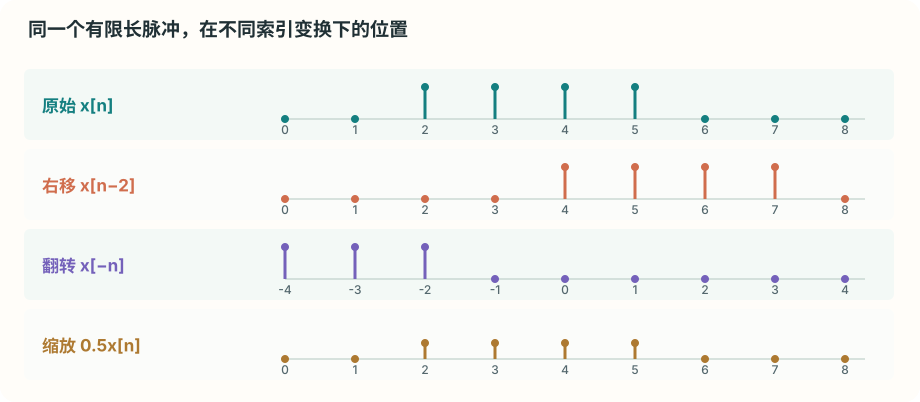
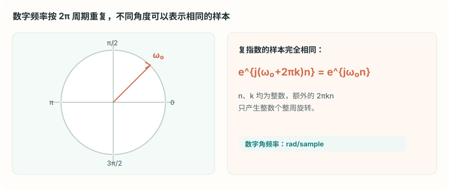

Signal · System · Insight / 02
离散时间信号：让每个索引都有意义
理解 x[n] 的索引规则，比背诵一张信号表更重要。
离散时间是一串数，不是一条缩小的曲线
数字录音常被画成连续的波浪线，但算法真正处理的是 …, x[−1], x[0], x[1], …。n 只能取整数；即使样本原来来自连续波形，数字处理中的 x[n] 也无需在非整数 n 上有定义。这个区别决定了延迟、翻转和“时间缩放”的真正含义。
考虑一个有限脉冲：当 2≤n≤5 时 x[n]=1，其他整数 n 上为 0。它既足够简单，能手算验证；又足够一般，可以显示索引操作是否画错。
冲激与阶跃：怎样精确描述一个序列
单位冲激 δ[n] 在 n=0 处为 1，其余索引为 0。单位阶跃 u[n] 在 n≥0 为 1。上面的四点脉冲正好是 x[n]=u[n−2]−u[n−6]。注意第二个阶跃从 n=6 开始减去，因此 n=5 仍为 1。
任何有限长度序列都可以表示成若干加权冲激的和，例如 [1,2,1]（从 n=0 开始）写为 δ[n]+2δ[n−1]+δ[n−2]。这恰好为下一章从冲激响应推出卷积提供支点。
式（1）：这里假定非零序列只位于 n=0,…,N−1；任意整数支撑范围可改写求和上下限。
延迟、翻转与幅度缩放，到底怎样移动样本？

延迟 d 个样本：把非零条件 2≤n≤5 换成 2≤n−d≤5，解出 2+d≤n≤5+d。因此 x[n−2] 向右移两个样本，而不是向左移。反转：x[−n] 的非零区间满足 2≤−n≤5，等价于 −5≤n≤−2。幅度缩放：0.5x[n] 只改变杆高，不改变发生的时刻。
若写成 x[2n]，表示只取 x 的偶数索引样本。这是整数域上的抽取操作，不是实数时间轴上完全无损的缩放；可能丢失原来的奇数样本。
为什么 ω 和 ω+2πk 是同一个数字频率？

式（2）：因 e^(j2πkn)=1，仅在 n、k 为整数时成立。
因此数字角频率可限制在任一长度为 2π 的区间，例如 [−π,π)，单位是 rad/sample。一个离散正弦要有正整数周期 N，需满足 ωN=2πm（m 为整数）；等价于 ω/(2π) 为有理数。连续时间正弦都有周期，但任意采样的离散正弦不一定周期。
能量与平均功率描述不同的信号
能量定义为整个整数域内的模方求和；长时平均功率则把对称截断窗口内的模方和除以窗口长度，再令窗口无限增长。有限支撑的非零序列通常有限能量、零平均功率；一直延伸的非零周期序列通常无限能量、有限平均功率。
式（3）：能量是离散平方和，并不自动带有焦耳单位。
例如 x=[1,−2,1] 的离散能量是 1+4+1=6。对恒等于 1 的无限序列，有限截断能量随长度增长而发散，但平均功率始终是 1。区分两者才能决定应使用能量谱还是功率谱密度分析。
改变延迟量，追踪非零区间
动手验证：改变脉冲右移量 d（样本）
杆状图的横轴是离散索引 n。交互仅用于辅助验证，全部关键定义和结论均可在前文独立阅读。
交互图采用原始非零区间 2≤n≤6，向右移 d 个样本；上方概念推导与下面的代码采用 2≤n≤5 的四点脉冲，宽度各自已声明。手动验证起点总是原起点加 d。
def pulse(n):
return int(2 <= n <= 5)
def delay(n, d):
return pulse(n-d)
assert [delay(n,2) for n in range(4,8)] == [1,1,1,1]
assert sum(v*v for v in [1,-2,1]) == 6完整可执行示例（02_sequences.py）；运行 python examples/02_sequences.py 检查翻转与能量断言。
四个容易混用的概念
- 索引 n 与时间 t：前者是整数，后者是连续物理变量。
- 延迟与提前：对固定的非零原索引 k，求解 n−d=k 就能确定方向。
- 时间压缩与抽取：x[2n] 的输入索引步长是 2，可能信息丢失。
- 能量与功率：先定义观测对象、求和区间与平均极限，不能只看公式像不像。
练习：若 x[n] 只在 n=−3、−2 非零，求 x[1−n] 的非零位置。然后判断它是否保留两个样本的顺序。
参考资料与下一步
核心公式使用标准离散时间信号约定；数值代码是可重复的教学样例，不是硬件性能测量。对完整推导与工程边界，可从以下资料继续查证。
- MIT OCW · Digital Signal Processing study materials：离散时间信号、系统、采样与 Z 变换基础定义。
- Oppenheim & Schafer · Discrete-Time Signal Processing（MIT 开放教材）：数学定义、线性时不变系统与频率约定。
- Analog Devices · The Scientist and Engineer’s Guide to DSP：采样、卷积与工程数字信号处理背景。